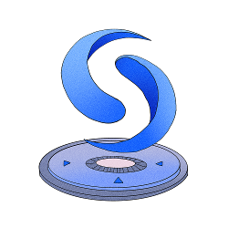
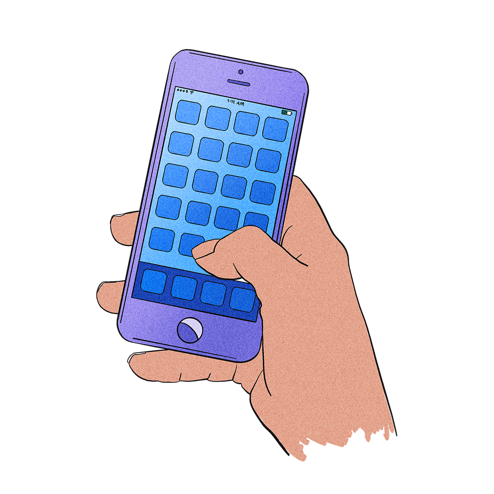
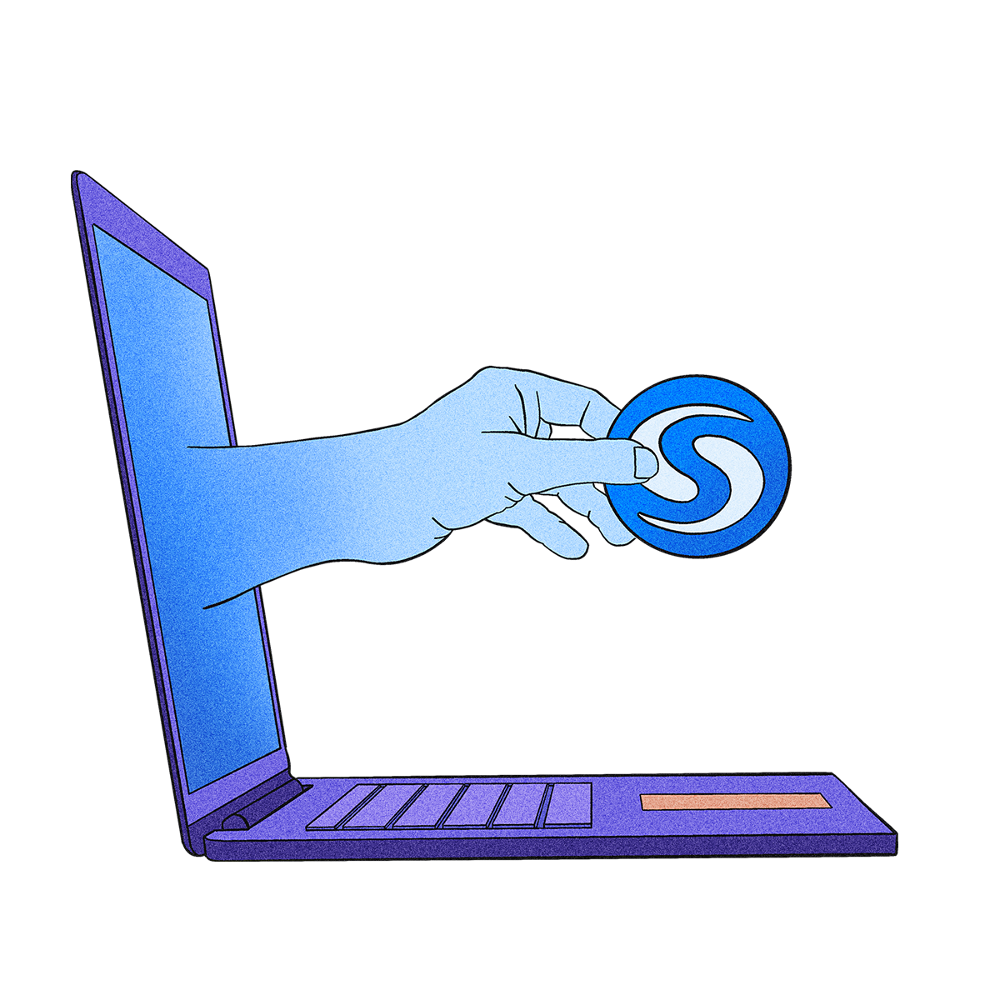

Skip to main content
Menu
Syscoin Docs
GitHub
🔆
🌙
Syscoin Docs
GitHub
Build the Future on Syscoin
Documentation for builders, futurists and revolutionaries

Developer Documentation
Deploy a NEVM Smart Contract
What is Syscoin?

User Guides

Get SYS